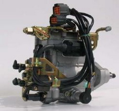
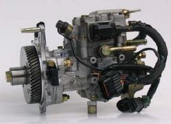

<ul>
	<li>VE forgóelosztó mechanikus rendszerű</li>
	<li>VE – EDC forgóelosztó rendszerű</li>
	<li>VE – COVEC –F forgóelosztó rendszerű, teljesen elektronikus rendszerű ROM modullal</li>
	<li>VRZ forgóelosztó, radiáldugattyús rendszerű elektonikus szabályozású ROM modullal</li>
</ul>